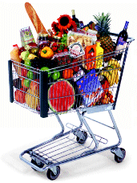

Price Chopper (the one in Slingerlands plaza carries a wide selection of products) Hannaford (the one on Wolf road carries a wide selection of products) Delmar Health Hut (offers 10% discount to pregnant women and nursing mothers) 282 Delaware Ave, Delmar, NY (518) 439-7775 Uncle Sam’s Good Natural Products Basic Foods 77 4th St, Troy, NY (518) 271-7299 443 Saratoga Rd, Scotia NY (518) 399-7229 Green Grocer (large store with many unique products) Brunswick Naturals 1505 Rte 9, Clifton Park, NY (518) 383-1613 828 Hoosick Rd, Troy, NY (518) 279-3663